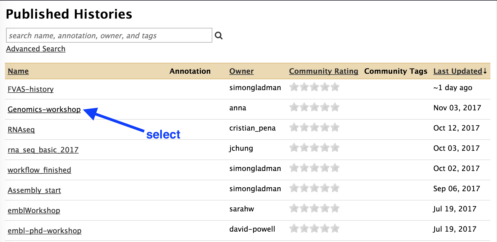

Starting with Galaxy
Keywords: Galaxy, Microbial Genomics Virtual Lab
Background
Galaxy is a web-based analysis and workflow platform designed for biologists to analyse their own data. It can be used to run a variety of bioinformatics tools. The selection of bioinformatics tools installed on the Galaxy instance we are using today caters for the analysis of bacterial genomics data sets.
Galaxy is an open, web-based platform. Details about the project can be found here.
The Galaxy interface is separated into three parts. The

Register
- Use Firefox, Chrome or Safari as your browser (not Internet Explorer).
- Open a new tab.
- In the address bar, type in the address of your galaxy server.

Click on

- Select:
User → Register - Enter your email, choose a password, and choose a user name.
-
Click
Submit -
Login, and refresh the page.
Import a shared history
For Galaxy-mel/Galaxy-qld users, import the following history:
- In Galaxy, go to the top menu bar
-
Click on
Shared Data -
From the drop down menu, click on
Histories

- From the list of Published Histories, click
Genomics-workshop

- In the top right, click on
Import history

- This history will now be in your “Current history” - the right hand pane in Galaxy.
- There should be six files. (The number in front of the file name is not important.)

- We will use these files for the Genomics Workshop. For additional ways to import histories, see below.
How to use Galaxy
-
Available tools are in the left hand panel. Find the tool you want or use the search bar at the top of the tools.
-
Click on the tool you want to use.
-
The tool interface will appear in the centre Galaxy panel. Check the settings.
-
Click
Execute . -
When the tool has finished, output file(s) will appear at the top of your “Current History” in the right hand panel.
-
Click on the eye icon next to a file to view it.
-
To access older histories, use the button at the top right of the History panel.
Alternative file import information
Copy this link:
https://swift.rc.nectar.org.au:8888/v1/AUTH_377/public/Microbial_tutorials/Galaxy_history_input_files.tar.gz
- Click on the
History cog
- Select
Import from File

- In the box called
Archived History URL , paste in the link address to the Galaxy history (that you copied above). - Click
Submit - Wait a few seconds.
- Click on the
view all histories button
- See if the Galaxy history has been imported: it will be called
imported from archive: Data - Above that pane, click on the
Switch to button. - Then click
Done (in the top left corner). - You should now have a list of five files in your current history. We will use these for the Genomics Workshop; or see below for additional files.

Other ways to import data into Galaxy
- Upload a file from your computer
- Import a shared history
- See the next section for more detailed information.